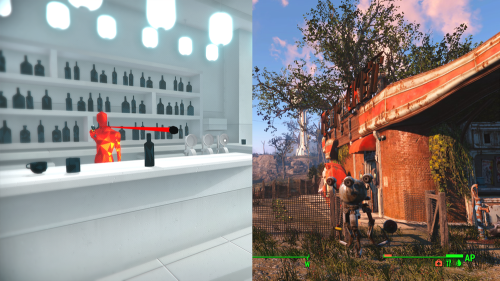
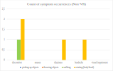
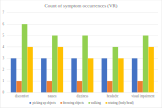

Immersion in Virtual Environments. Comparing panic, distress, motion
sickness, and user experience in VR and non-VR.
BCSC2021
Immersion in virtual environments
Comparing panic, distress, motion sickness, and user experience
in VR and non-VR
Marc Aurel Störmer, Jakob Robert Fleisch, Dobromir Ivanov Palushev
Introduction
VR
- Stereoscopic (3D) vision with head-mounted displays
- Motion tracking
- Limited movement (physical barriers)
- Direct (haptic) feedback
non-VR
- Single viewpoint on 2D-Monitor
- Controller- or keyboard-based navigation
- Unlimited freedom of locomotion
- Detached feedback through visual clues
Study Design
Gameplay

Example of the environment of the video games SUPERHOT (left) and Fallout 4 (right)
Study Design
Experiment Design
SUPERHOT
- Player was limited by the physically available space (2m x 2m)
- Enemies tried to shoot or hit the player
- Enemies moved at the same speed as the player
- Player could shoot and hit the enemies
- Player could throw objects at the enemies
Fallout 4
- Player was tasked to defend a building from mutants
- Mutants approached the player quickly
- Player could shoot at the mutants
- Player could move freely afterwards
Study Design
Questionnaire
based on the Likert Scale
- Basic demographic questions
- Experience in VR and video games
- Motion sickness symptoms
- Experiences regarding threat and distress
- Situations in which they felt anxious or panicky
- Movement speed
Participants were able to document their own observation
Demographics
- 20 participants - 13 male, 7 female
- 12 participants played SUPERHOT, 8 played Fallout 4
- Ratio VR- to Non-VR-players: 50:50
- 95% play games in general, 20% play every day
- 60% have used VR-enabled applications
Motion Sickness - most common symptoms
Symptom occurrences per activity
Panic and distress levels
Discussion / Summary
Motion Sickness
More frequent and stronger in VR than in non-VR


{kind=link}